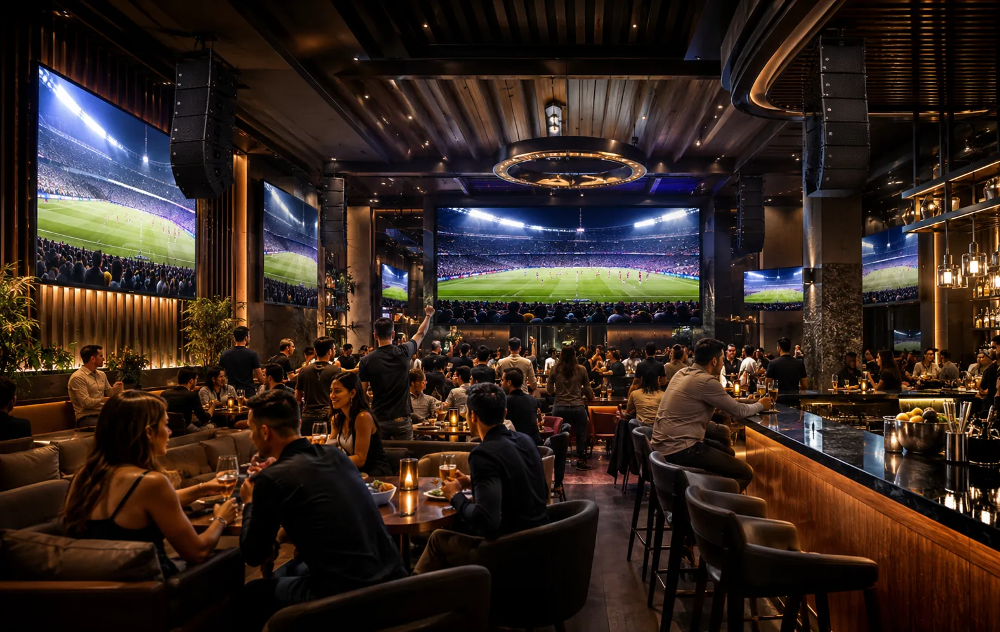
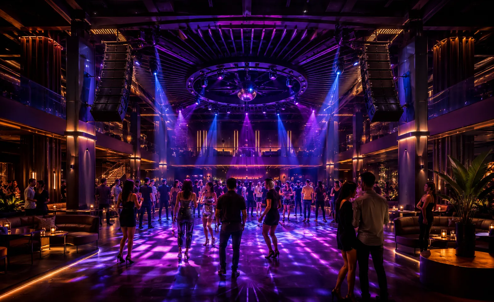
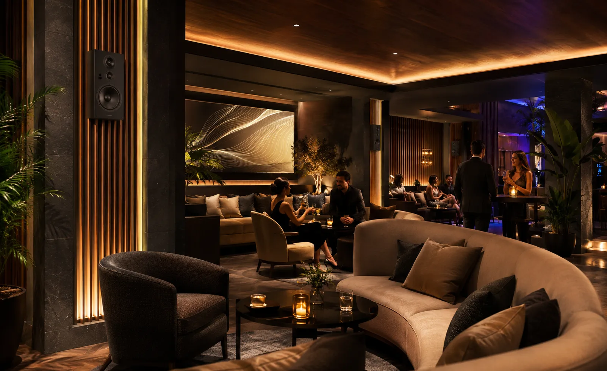
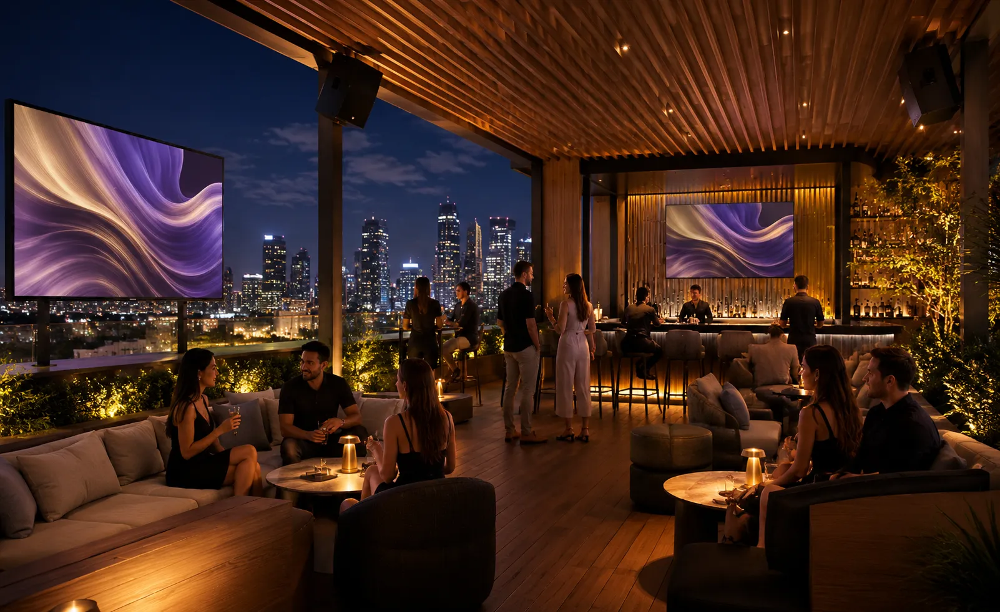
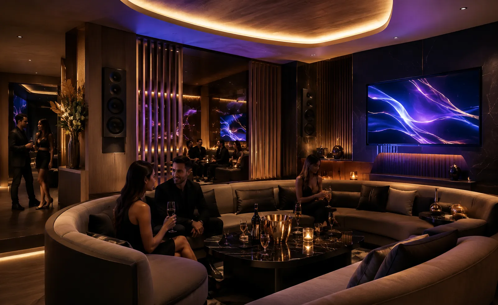
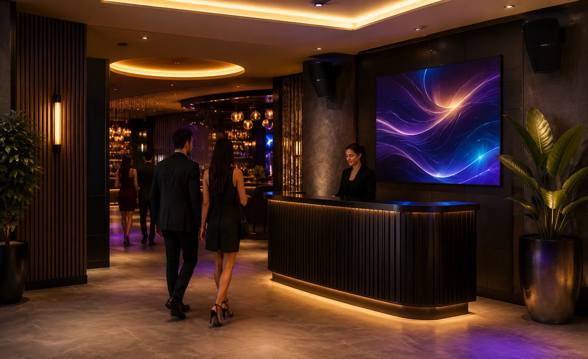

Audio, video e iluminación para bares y antros con impacto, cobertura y control.
Diseñamos sistemas de sonido de alto impacto, subwoofers, pantallas, distribución de video,
visuales, iluminación y control por zonas para bares, antros, lounges y rooftops.
Consideramos dimensiones, altura, cobertura, nivel de presión sonora esperado, ruido ambiental,
distribución de áreas, operación del DJ o personal y equipos existentes para dimensionar
correctamente el sistema.
Tu bar también se vive a través del ambiente
La experiencia de un bar o antro depende de cómo trabajan en conjunto el sonido, las pantallas, la iluminación, las fuentes de contenido, el control de nivel y la operación del sistema.
En DG Audiosound diseñamos la distribución de audio, video e iluminación por áreas para lograr cobertura, nivel, claridad y control acordes con el concepto y la operación real del negocio.
Audio con presencia
Cobertura y nivel diseñados para el concepto y las distintas áreas del lugar.
Graves controlados
Subwoofers y procesamiento definidos para aportar impacto sin perder control del sistema.
Video e iluminación
Pantallas, visuales e iluminación coordinados con las necesidades del espacio y del contenido.
Operación controlada
Zonas, fuentes y niveles organizados para facilitar la operación diaria del personal.
Un bar o antro no vive solo de la música
En muchos espacios se intenta cubrir todo con una bocina demasiado fuerte en una sola zona. Esto provoca áreas con volumen excesivo, otras sin claridad, música molesta para conversar, cables visibles o equipos difíciles de operar.
El reto no es solamente comprar bocinas o amplificadores por separado. Un sistema para bares y antros requiere dimensionar cobertura, potencia, subwoofers, procesamiento, zonas, cableado, distribución de señal, control y protección del sistema.
Audio mal distribuido
Áreas con exceso de nivel y otras sin cobertura suficiente afectan la uniformidad del sistema.
Visuales débiles
Ubicación, tamaño o distribución de señal inadecuados reducen visibilidad y consistencia del contenido.
Ambiente sin energía
La iluminación debe coordinarse con el concepto, los puntos de montaje, el control y la operación del lugar.
Operación complicada
Una interfaz confusa o sin límites de operación facilita errores de nivel, ruteo o encendido.
Una experiencia audiovisual completa para bares, antros, lounges y rooftops.
La solución se adapta al concepto, capacidad, distribución, horarios y operación real de tu negocio. No se trata de comprar equipos sueltos, sino de integrar audio, video, iluminación y control para crear ambiente con intención.
Sistema principal de audio
Altavoces, subwoofers y amplificación dimensionados según cobertura, nivel esperado, distribución del espacio y tipo de contenido.
DJ, microfonía y fuentes
Entradas y ruteo para DJ, reproductores, microfonía u otras fuentes, con niveles y conectividad definidos para la operación prevista.
Pantallas y distribución de video
Pantallas, proyectores o visuales con distribución de señal definida según distancias, fuentes, resolución y número de destinos.
Iluminación ambiental y de efecto
Integración de iluminación cuando el proyecto lo requiera, considerando zonas, escenas, puntos de montaje, control y coordinación con el sistema audiovisual.
Procesamiento, amplificación y protección
DSP, amplificación, limitadores y ruteo seleccionados de acuerdo con la carga, el número de zonas y el desempeño requerido.
Control, cableado y puesta a punto
Control por zonas, cableado, organización de rack, pruebas, configuración y capacitación según el alcance contratado.
Audio, video e iluminación adaptados a las distintas áreas del venue
Barra, pista, lounge, terraza, zonas VIP y accesos pueden requerir niveles, cobertura, contenido y control diferentes. Diseñamos cada área como parte de un sistema coordinado.

Barra principal
Pista o zona central
Lounge o zona de mesas
Terraza o rooftop
Zona VIP o privados
Acceso o recepciónUn proceso claro para una solución profesional
Un proceso estructurado para definir objetivos, niveles, zonas, infraestructura, equipos, instalación, configuración y operación antes de poner el sistema en servicio.
Entendemos tu concepto
Conocemos tu negocio, ambiente, clientes y necesidades.
Revisamos tus áreas
Analizamos barra, pista, lounge, terraza, VIP y accesos.
Diseñamos la solución
Definimos audio, video, iluminación, zonas y conectividad.
Propuesta clara
Te entregamos alcance, equipos, tiempos e inversión.
Instalamos
Montaje, conexión, pruebas, ajustes y puesta en marcha.
Te capacitamos
Explicamos el uso básico para una operación sencilla.
No se trata de sumar equipos: se trata de dimensionar un sistema completo
En bares y antros deben revisarse cobertura, presión sonora esperada, potencia, subwoofers, procesamiento, número de zonas, impedancia o línea distribuida cuando aplique, cableado, fuentes y límites de operación.
Nuestro enfoque es integrar audio, video, iluminación y control con una arquitectura técnica clara, capacidad de mantenimiento y margen para futuras ampliaciones cuando el proyecto lo requiera.
Una decisión profesional para tu negocio
- Asesoría personalizada y real
- Propuesta técnica formal y clara
- Equipos profesionales 100% originales
- Instalación estética y estructurada
- Integración armoniosa con el espacio
- Capacitación práctica de uso
- Acompañamiento técnico post-venta
Marcas profesionales para soluciones de alto rendimiento
Seleccionamos tecnología profesional según cobertura, potencia, procesamiento, conectividad, operación, compatibilidad y presupuesto de cada proyecto.
Preguntas frecuentes sobre audio, video e iluminación para bares y antros
Resolvemos tus dudas principales para ayudarte a planear e invertir con total tranquilidad y claridad técnica.
Diseñemos el audio, video e iluminación de tu bar o antro
Completa el formulario y te contactamos por WhatsApp para revisar dimensiones, áreas, operación, equipos existentes y el alcance técnico del proyecto.
Hablemos de tu
bar o antro
Platícanos el concepto, tamaño y áreas del lugar. Podemos orientarte sobre sonido principal, subwoofers, DJ, pantallas, distribución de video, iluminación, zonas, control o actualización de un sistema existente.
Solicita asesoría para tu bar o antro
Completa el formulario y se abrirá WhatsApp con la información estructurada. Indica si buscas un sistema nuevo o una actualización y comparte medidas, áreas y equipos existentes cuando los conozcas.